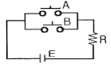
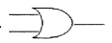
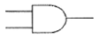
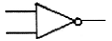
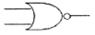
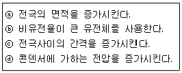

승강기기능사 (2011-10-09 기출문제)
1과목: 승강기개론
1. 균형체인의 설치 목적으로 가장 알맞은 것은?
- 카의 진동을 방지하기 위해서 설치한다.
- 카의 추락을 방지하기 위해서 설치한다.
- 이동 케이블과 로프의 이동에 따라 변화되는 하중을 보상하기 위해서 설치한다.
- 균형추의 추락을 방지하기 위해서 설치한다.
(정답률: 85%)

2. 승강장 도어와 문틀 사이의 여유간격은 몇 [mm]이하 이어야 하는가?
- 6[mm]
- 8[mm]
- 10[mm]
- 12[mm]
(정답률: 51%)
3. 승강장 출입구 바닥 앞부분과 카 바닥 앞부분과의 틈의 너비는 몇 [cm] 이하로 규정하고 있는가?
- 1[cm]
- 4[cm]
- 5[cm]
- 7[cm]
(정답률: 60%)
4. 엘리베이터의 속도제어 중 VVVF 제어 방식의 특징으로 잘못 설명된 것은?
- 소비전력을 줄일 수 있고 보수가 용이하다.
- 저속의 승강기에만 적용 가능하다.
- 유도전동기의 전압과 주파수를 변환시킨다.
- 직류전동기와 등등한 제어 특성을 낼 수 있다.
(정답률: 74%)
5. 승강로에 설치되는 파이널 리미트 스위치에 대한 설명 중 타당하지 않은 것은?
- 승강로 내부에 설치하고 카에 부착된 캠으로 조작 시켜야 한다.
- 기계적으로 조작되어야 하며 작동 캠은 금속재 이어야 한다.
- 화이널 리미트 스위치가 작동하면 카의 움직임은 어느 방향으로든지 움직일 수 없어야 한다.
- 종점스위치가 설치되면 파이널 리미트 스위치는 불필요하다.
(정답률: 68%)
6. 다음 중 조속기의 종류에 해당되지 않는 것은?
- 플라이 불형 조속기
- 롤 세프티형 조속기
- 웨지형 조속기
- 디스크형 조속기
(정답률: 78%)
7. 정격속도가 분당 120[m]인 승객용 엘리베이터에 사용하는 유입완충기의 성능시험을 하려고 한다. 충돌 속도는 몇 [m/min]가 적당한가?
- 130
- 132
- 135
- 138
(정답률: 41%)
8. 에스컬레이터의 경사도는 주로 몇 도[°]이하로 설치 되고 있는가?
- 15
- 25
- 30
- 45
(정답률: 81%)
9. 로프식 엘리베이터의 비상정지장치 종류가 아닌 것은?
- F G C형
- F W C형
- 세미실형
- 순간식형
(정답률: 73%)
10. 기계실의 바닥면부터 천장 또는 보의 하부까지의 수직거리는 얼마 이상으로 해야 하는가?
- 1[m]
- 1.5[m]
- 2[m]
- 2.5[m]
(정답률: 78%)
11. 트랙션식 권상기에서 로프와 도르래의 마찰계수를 높이기 위해서 도르래 홈의 밑을 도려낸 언더커트 홈을 사용한다. 이 언터커트 홈의 결점은?
- 지나친 되감기 발생
- 균형추 진동
- 시브의 이완
- 로프 마모
(정답률: 66%)
12. 로프식 엘리베이터의 기계실에 대한 설명 중 옳지 않은 것은?
- 기계실은 일반적으로 승강로의 바로 위에 설치된다.
- 기계실에는 소요설비 이외의 것이 있어서는 안 된다.
- 기계실의 조명은 100 lx 이상으로 한다.
- 조명 및 환기시설이 갖추어 있고 실온은 40℃ 이하를 유지해야 한다.
(정답률: 74%)
13. 에스컬레이터의 안전장치가 아닌 것은?
- 스텝체인 안전장치
- 플런저 이탈 방지장치
- 핸드레일 안전장치
- 역회전 방지장치
(정답률: 67%)
14. 다음 중 승강로의 구조에 대한 설명으로 옳지 않은 것은?
- 승강로는 안전한 벽 또는 울타리에 의하여 외부공간과 격리되어야 한다.
- 사람 또는 물건이 운전 중인 카나 균형추에 접촉하지 않도록 되어야 한다.
- 화재시 승강로를 거쳐 다른 층으로 연소되지 않아야 한다.
- 승강기의 배관설비 이외의 배관도 승강로에 함께 설치되도록 한다.
(정답률: 74%)
15. 로프꼬임 방향과 특성에 대한 설명이 옳지 않은 것은?
- 보통꼬임은 스트랜드와 로프의 꼬는 방향이 반대이다.
- 랭꼬임은 스트랜드와 로프의 꼬는 방향이 같다.
- 랭꼬임은 보통꼬임에 비해서 마모가 빠르다.
- 보통꼬임은 잘 풀리지 않으므로 일반적으로 사용된다.
(정답률: 57%)
2과목: 안전관리
16. 승강장 문이 열려 있는 상태에서 발생하는 재해를 방지하기 위한 장치로서 모든 제약이 해제되어 자동으로 문이 닫히게 하는 장치는?
- 도어머신
- 도어클로저
- 도어행거
- 도어록
(정답률: 79%)
17. 수평보행기의 디딤면이 고무제품 등 미끄러지기 어려운 구조일 경우에는 경사도를 몇 도[°] 이하로 할 수 있는가?
- 13°
- 15°
- 18°
- 20°
(정답률: 68%)
18. 플런저 선단에 도르래를 놓고 로프 또는 체인을 통해 카를 올리고 내리는 유압엘리베이터 종류는?
- 직접식
- 팬터 그래프식
- 간접식
- 실린더식
(정답률: 44%)
19. 정전기로 인한 화재폭발 방지에 필요한 조치는?
- 개폐기 설치
- 전선은 단선 사용
- 접지설비
- 역률 개선
(정답률: 71%)
20. 재해의 직접원인인 것은?
- 안전지식의 부족
- 안전수칙의 오해
- 작업기준의 불명확
- 복장, 보호구의 결함
(정답률: 66%)
21. 경보를 통일시켜 정하지 않아도 되는 것은?
- 발파작업
- 화재발생
- 토석의 붕괴
- 누전감지
(정답률: 47%)
22. 안전 관리자의 직무가 아닌 것은?
- 안전보건 관리규정에서 정한 직무
- 산업재해 발생의 원인 조사 및 대책
- 안전교육계획의 수립 및 실시
- 근로환경보건에 관한 연구 및 조사
(정답률: 75%)
23. 재해의 발생형태에서 추락에 대한 설명으로 가장 옳은 것은?
- 사람이 중간 단계의 접촉 없이 자유낙하 하는 것
- 사람이 정지물에 부딪친 것
- 사람이 엎어져 넘어지는 것
- 사람이 평면상으로 넘어져 굴러 떨어지는 것
(정답률: 79%)
24. 안전점검을 할 때 어떤 일정 기간을 두고서 행하는 점검은?
- 수시점검
- 임시점검
- 특별점검
- 정기검점
(정답률: 84%)
25. 안전관리상 안전모를 착용하는 목적이 아닌 것은?
- 감전의 방지
- 추락에 의한 부상 방지
- 종업원의 표시
- 비산물로 인한 부상 방지
(정답률: 85%)
26. 물에 젖은 손으로 전기기기를 만졌을 경우의 위험 요소는?
- 감열
- 소손
- 누전
- 감전
(정답률: 86%)
27. 승강기 시설을 점검하여 다음과 같은 조치를 취하였다. 다음 중 가장 적절한 조치사항은?
- 퓨즈가 단선되어 철선을 끼웠다.
- 기계실의 조도가 규정치 미달이어서 조명등을 껐다.
- 와이어로프가 규정치 이상 마모되어 교체를 지시했다.
- 카 내부의 비상용 인터폰이 고장이 나서 제거하였다.
(정답률: 78%)
28. 작업장에서 작업복을 착용하는 가장 큰 이유는?
- 방한
- 작업능률 향상
- 작업중 위험 감소
- 복장 통일
(정답률: 82%)
29. 엘리베이터 피트내의 환경상태를 점검할 때 유의 하여야 할 항목을 나열한 것이다. 해당되지 않는 것은?
- 피트 바닥 청결상태
- 비상등 작동상태
- 누수, 누유상태
- 피트 작업등 점등상태
(정답률: 49%)
30. 에스컬레이터의 제작기준으로 맞지 않는 것은?
- 경사도는 일반적인 경우 30도 이하로 한다.
- 핸드레일의 속도는 디딤판과 동일 속도로 한다.
- 디딤판의 속도는 65m/min 이하로 한다.
- 이동식 핸드레일의 경우 운행 전구간에서 디딤판과 핸드레일의 속도차는 0~2%이하로 한다.
(정답률: 73%)
3과목: 승강기보수
31. 로프식 엘리베이터에서 정격속도 90m/min인 엘리베이터의 균형추와 완충기의 최대거리는 몇 [mm]인가?
- 300
- 600
- 900
- 1200
(정답률: 46%)
32. 가이드 레일에 하중이 작용하여 부재에 가해지는 응력, 휨 및 앵커볼트의 전단응력을 계산하는데 이 때 응력, 휨 및 앵커볼트의 전단응력 등 안전이 허용되는 범위를 나타내는 관계식 중 틀린 것은?
- 작용응력 ≦ 허용응력
- 휨 ≦ 0.5cm
- 앵커볼트의 전단응력 ≦ 전단허용응력
- 앵커볼트의 인발하중 ≦ 앵커볼트의 인발내력
(정답률: 38%)
33. 카 상부에 탑승할 때 반드시 지켜야 할 사항으로 볼 수 없는 것은?
- 스톱 스위치를 차단한다.
- 탑승 후 외부 문부터 닫는다.
- 자동 스위치를 점검 쪽으로 전환한다.
- 카 상부에 탑승하기 전에 작업등을 점등한다.
(정답률: 56%)
34. 승강로에 관한 설명 중 올바르지 못한 것은?
- 승강로는 안전한 벽 또는 울타리에 의하여 외부공간과 격리되어야 한다.
- 엘리베이터에 필요한 배관 설비외의 설비는 승강로 내에 설치하여서는 안 된다.
- 승강로는 피트 하부를 사무실이나 통로로 사용할 경우 균형추에 비상정지장치를 설치한다.
- 승강로는 화재시 승강로는 거쳐서 다른 층으로 연소 될 수 있도록 한다.
(정답률: 77%)
35. 에스컬레이터의 스커트 가드는 어느 부분에서나 25㎠의 면적에 1500N의 힘을 직각으로 가했을 때의 휨량은 몇 mm이내이어야 하는가?
- 2mm이내
- 3mm이내
- 4mm이내
- 5mm이내
(정답률: 33%)
36. 유압승강기의 안전장치에 대한 설명으로 옳지 않은 것은?
- 플린저 리미트 스위치는 플런저의 상한 행정을 제한하는 안전장치이다.
- 플런저 리미트 스위치 작동시 상승방향의 전력을 차단하며, 반대방향으로 주행이 가능토록 회로가 구성 되어야 한다.
- 작동유 온도 검출 스위치는 기름탱크의 온도 규정치 80℃를 초과하면 이를 감지하여 카 운행을 중지시키는 장치이다.
- 전동기 공전 방치장치는 타이머에 설정된 시간을 초과하면 전동기를 정지시키는 장치이다.
(정답률: 59%)
37. 다음 중 승객·화물용 엘리베이터에서 과부하감지장치의 작동에 대한 설명으로 틀린 것은?
- 작동치는 정격 적재하중의 1⑤~110%를 표준으로 한다.
- 적재하중 초과시 경보를 울린다.
- 출입문을 자동적으로 닫히게 한다.
- 카의 출발을 정지시킨다.
(정답률: 75%)
38. 조속기(GOVERNOR)의 작동상태를 잘못 설명한 것은?
- 카가 상승하거나 하강하는 어떤 방향에서도 정격속도의 1.3배를 초과하기 전에 조속기 스위치가 동작해야 한다.
- 조속기의 스위치는 작동 후 자동으로 복귀되어서는 안된다.
- 조속기의 캣치는 일단 동작하고 난 후 자동 복귀된다.
- 조속기 로프가 장력을 잃게 되면 전동기의 주회로를 차단시키는 경우도 있다.
(정답률: 59%)
39. 엘리베이터용 가이드레일의 역할이 아닌 것은?
- 카와 균형추의 승강로내 위치 규제
- 승강로의 기계적강도를 보강해 주는 역할
- 카의 자중이나 화물에 의한 카의 기울어짐 방지
- 집중하중이나 비상정지장치 작동시 수직하중 유지
(정답률: 54%)
40. 에스컬레이터의 스탭(디딤판)체인의 안전장치에 관한 설명 중 옳지 않은 것은?
- 일종의 롤러 체인이다.
- 에스컬레이터의 폭이 넓을수록 체인의 강도는 높아야 한다.
- 에스컬레이터의 양정(계고)이 높을수록 체인의 강도는 높아야 한다.
- 체인의 안전장치는 길이의 1/2되는 지점에 설치해야 한다.
(정답률: 46%)
41. 기계실에 권상기, 전동기 및 제어반 등을 설치하려고 한다. 벽으로부터 최소 몇 cm이상 떨어져야 점검등이 용이한가?
- 20
- 25
- 30
- 50
(정답률: 59%)
42. 다음 중 도어 사이에 이물질이 있을 경우 반전시키는 보호 장치가 아닌 것은?
- 세이프티슈
- 비상정지 장치
- 광전 장치
- 초음파 장치
(정답률: 59%)
43. 비상정지장치가 작동한 경우에 검사하여야 할 사항과 거리가 먼 것은?
- 조속기 로프의 연결부위 손상 유무
- 조속기의 손상 유무
- 가이드 레일의 손상 유무
- 메인 로프의 연결부위 손상 유무
(정답률: 36%)
44. 에스컬레이터가 정격하중으로 하강하는 중 브레이크가 작동될 경우 감속도의 기준은?
- 0.1G 이하
- 0.2G 이하
- 0.5G 이하
- 1G 이하
(정답률: 54%)
45. 유압엘리베이터의 플런저에 대한 설명으로 옳은 것은?
- 플런저에 걸리는 하중이 클수록 그 단면적은 커지므로, 재료는 두꺼운 강관이 사용된다.
- 플런저에 작용하는 총 하중이 크면 클수록 그 단면은 작아진다.
- 플런저의 표면은 연마를 하는 경우의 표면 거칠기는 10~30(μm)정도이다.
- 탄소강 강관의 이음매가 없는 것이 사용되며 두께는 50~60cm정도이다.
(정답률: 44%)
4과목: 기계,전기기초이론
46. 자동차를 수용하는 주차구획과 자동차용 엘리베이터와의 조합으로 입체적으로 구성되며 자동차의 전방향으로 주차구획을 설치하는 것을 종식, 좌우 방향을 횡식이라 하는 주차 설비는?
- 수직 순환식
- 수평 순환식
- 평면 왕복식
- 엘리베이터식
(정답률: 40%)
47. 직류기에서 워드레오나드 방식의 목적은?
- 계자자속을 조정하기 위하여
- 속도제어를 하기 위하여
- 병렬운전을 하기 위하여
- 정류를 좋게 하기 위하여
(정답률: 55%)
48. 자동제어계의 상태를 교란시키는 외적인 신호는?
- 동작신호
- 외란
- 목표량
- 피드백신호
(정답률: 73%)
49. 진공 중에서 1Wb인 같은 크기의 두 자극을 1m 거리에 놓았을 때 작용하는 힘은 몇 N 인가?
- 6.33×103
- 6.33×104
- 6.33×105
- 6.33×108
(정답률: 47%)
50. 직류 전동기의 제동법이 아닌 것은?
- 저항제동
- 발전제동
- 역전제동
- 회생제동
(정답률: 43%)
51. 배선용 차단기의 영문 문자기호는?
- S
- DS
- THR
- MCCB
(정답률: 75%)
52. 길이 측정에 사용되는 측정기의 설명 중 옳지 않은 것은?
- 다이얼 게이지 : 기어를 이용
- 옵티미터 : 광학 확대장치 이용
- 미니미터 : 전기용량의 변화를 이용
- 마이크로미터 : 나사를 이용
(정답률: 43%)
53. 유도전동기의 속도제어법이 아닌 것은?
- 주파수제어법
- 계자제어법
- 2차저항법
- 2차여자법
(정답률: 42%)
54. 절연저항을 측정하는 계기는?
- 훅온미터
- 휘트스톤브리지
- 회로시험기
- 메거
(정답률: 71%)
55. 다음 회로와 원리가 같은 논리기호는?





(정답률: 58%)
56. 입체 캠에 해당하는 것은?
- 단면캠
- 정면캠
- 직동캠
- 판캠
(정답률: 34%)
57. RLC직렬회로에서 직렬 공진시 최대가 되는 것은?
- 전압
- 전류
- 저항
- 주파수
(정답률: 44%)
58. 콘덴서의 정전용량이 증가 되는 경우를 모두 나열한 것은?(오류 신고가 접수된 문제입니다. 반드시 정답과 해설을 확인하시기 바랍니다.)

- ⓐ
- ⓐⓑ
- ⓐⓑⓒ
- ⓐⓑⓒⓓ
(정답률: 53%)
59. 승강기의 브레이크 장치에 관한 설명 중 옳은 것은?
- 승객용 엘리베이터는 125%의 적재하중을 싣고 정격속도 하강시 정격부하시와 같은 승차감으로 안전하게 감속 정지해야 한다.
- 화물용 엘리베이터는 125%의 적재하중을 싣고 정격속도 하강시 안전하게 감속 정지해야 한다.
- 승객용 엘리베이터는 125%의 적재하중을 싣고 정격속도 하강시 안전하게 감속 정지해야 한다.
- 화물용 엘리베이터는 135%의 적재하중을 싣고 정격속도 하강시 안전하게 감속 정지해야 한다.
(정답률: 48%)
60. 2단자 반도체 소자로 서지 전압에 대한 회로 보호용으로 사용되는 것은?
- 터널 다이오드
- 서미스터
- 바리스터
- 바렉터 다이오드
(정답률: 50%)